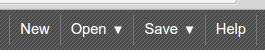
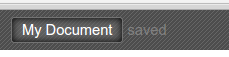

JSON Editor Online - Documentation
Introduction
JSON Editor Online is a web-based tool to view, edit, and format JSON. It shows your data side by side in a clear, editable treeview and in a code editor.
Supported browsers: Chrome, Firefox, Safari, Opera, Internet Explorer 8+.
Website: http://jsoneditoronline.org.
Contents:
Main menu
The applications main menu contains options to clear, load and save the JSON contents of the application. Files can be loaded from disk, url, or online, and can be saved online or to disk. Please note that due to security restrictions, the application can only open files from public websites, not from an intranet. The data policy is described here.
Loading and saving documents in the cloud
Documents can be saved online by clicking menu Save, save online. Online saved documents can be loaded (and shared with others) via their url. This url looks like:
To open a saved document, go to menu Open. This menu contains a list with all saved documents. Documents can be deleted here too by clicking the cross right of the document name. Note that the list with documents is stored in the browsers local storage. When reinstalling your browser or clearing all browser data, this list will be gone.
http://jsoneditoronline.org/?id=1aad4e2234c17c7f243c1faf4f5d3363
Online saved documents have a name, which is displayed in the top left of the application. The name can be changed by clicking it, this will open a dialog where a new name can be entered.
Load a document via query parameters
To automatically load a JSON document when opening the JSON Editor,
the query parameters id, url, and json can be used:
-
To load an online stored document via it's id, add a query parameter named
http://jsoneditoronline.org/?id=1aad4e2234c17c7f243c1faf4f5d3363idto the url, having the documents id as value: -
To load a JSON document from a query parameter, add a query parameter named
jsonwith the JSON document as value:http://jsoneditoronline.org/?json={%22name%22:%22John%22,%22age%22:32}
Note that the document must be url-encoded. Furthermore, the total length of an url is limited (a safe maximum is 2048 characters), so it's not possible to store large documents in a query parameter.
-
To load a JSON document from an url, add a query parameter named
urlwith the url of the document to be loaded as value:http://jsoneditoronline.org/?url=http://jsoneditoronline.org/test/example.json
Note that the JSON document must be publicly available.
Panels
The application contains two panels: a code editor on the left, and a Tree Editor on the right.
There is a splitter between the two panels, allowing to change the width of both panels according to ones needs. To copy the contents from one panel to an other, the two copy buttons between the panels can be used.

Code editor
The code editor displays JSON data in a code editor. The editor is capable of formatting, compacting, and inspecting JSON.

The menu of the code editor contains the following buttons:
- Format. Format the JSON data, make the data readable by applying indentation and returns.
- Compact. Compact the JSON data, remove all unnecessary characters like whitespaces and returns.
Tree editor
The Tree editor displays the JSON data in an editable tree. The editor makes it easy to create, duplicate, remove fields, and to edit the contents of the fields.

The menu of the tree editor contains the following functions:
- Expand all. Expand all fields in the editor.
- Collapse all. Collapse all fields in the editor.
- Undo. Undo last action.
- Redo. Redo last action.
- Search. Search for text in the tree editor. Search results will be highlighted, and can be iterated by repeatedly pressing Enter or Shift+Enter. The right side of the search box two buttons to go to the next or previous search result.
The field values in the editor are editable input fields.
The fields can be dragged up and down using the dragarea
 on the left side of the fields. When a field is the last item of the
childs of an array or object, the field can also be dragged horizontally
to move it in or out of the array or object.
on the left side of the fields. When a field is the last item of the
childs of an array or object, the field can also be dragged horizontally
to move it in or out of the array or object.

Right from the dragarea is a button
 to open the actions menu.
Depending on the type of field, the following functionality is
available in the actions menu:
to open the actions menu.
Depending on the type of field, the following functionality is
available in the actions menu:
-
Type. Change the type of the field. Choose from:
- auto The field type is automatically determined from the value and can be a string, number, boolean, or null.
- object An unordered set of key/value pairs.
- array An ordered collection of values.
- string Field type is not determined from the value, but always returned as string.
- Sort. Sort the childs of an array or object. For an array, the values of the childs will be sorted. In case of an object, the childs will be sorted by key. Arrays and objects can be sorted ascending or descending.
- Insert. Insert a new field before current field. Available types are auto (default), object, array, and string.
- Append. Insert a new field after current field. Available types are the same as the insert action.
- Duplicate. Duplicate the field including all childs.
- Remove. Remove the field including all childs.
Shortcut keys
The tree editor supports shortcut keys for all available actions. The editor can be used by just a keyboard. The following short cut keys are available:
Tree editor
| Key | Description |
|---|---|
| Alt+Arrows | Move the caret up/down/left/right between fields |
| Shift+Alt+Arrows | Move field up/down/left/right |
| Ctrl+D | Duplicate field |
| Ctrl+Del | Remove field |
| Ctrl+Enter | Open link when on a field containing an url |
| Ctrl+Ins | Insert a new field with type auto |
| Ctrl+Shift+Ins | Append a new field with type auto |
| Ctrl+E | Expand or collapse field |
| Alt+End | Move the caret to the last field |
| Ctrl+F | Find |
| F3, Ctrl+G | Find next |
| Shift+F3, Ctrl+Shift+G | Find previous |
| Alt+Home | Move the caret to the first field |
| Ctrl+M | Show actions menu |
| Ctrl+Z | Undo last action |
| Ctrl+Shift+Z | Redo |
Code editor
The code editor is powered by Ace Editor. This editor's shortcut keys are described here:
https://github.com/ajaxorg/ace/wiki/Default-Keyboard-Shortcuts
Additionally, there are shortcut keys to format/compact the code:
| Key | Description |
|---|---|
| Ctrl+\ | Format JSON data, set proper indentation |
| Ctrl+Shift+\ | Compact JSON data, remove all whitespace |